From printed circuit boards to exploits
(pwning IoT devices like a boss)
@virtualabs | Hack in Paris '18
About me
- Head of Research @ Econocom Digital Security
- Hardware hacker (or at least pretending to be one)
- Speaker @ various conferences
- Special interest in Bluetooth Low Energy since 2 years
What this talk is not
- A detailed reference guide on how to p0wn IoT devices
- A list of tools you may use to test devices
It is all about how to think and analyze and exploit
Let's do it the hacker way !
Methodology
Existing methodologies
- Rapid7's methodology (7 basic steps)
- OWASP IoT Project (not really mature yet)
PCB reverse-engineering
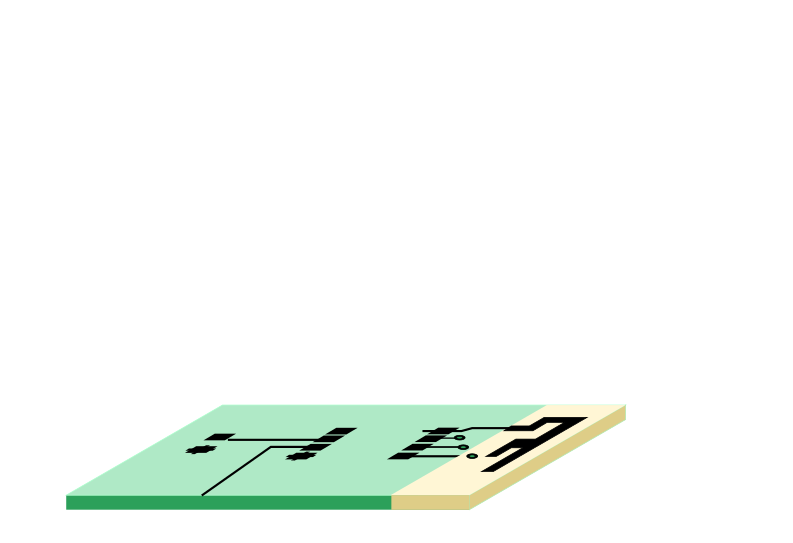Components identification
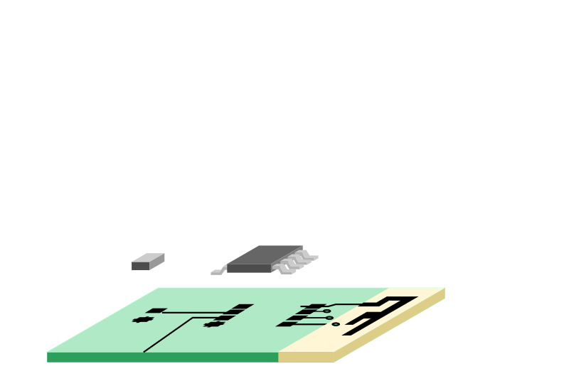Memory extraction
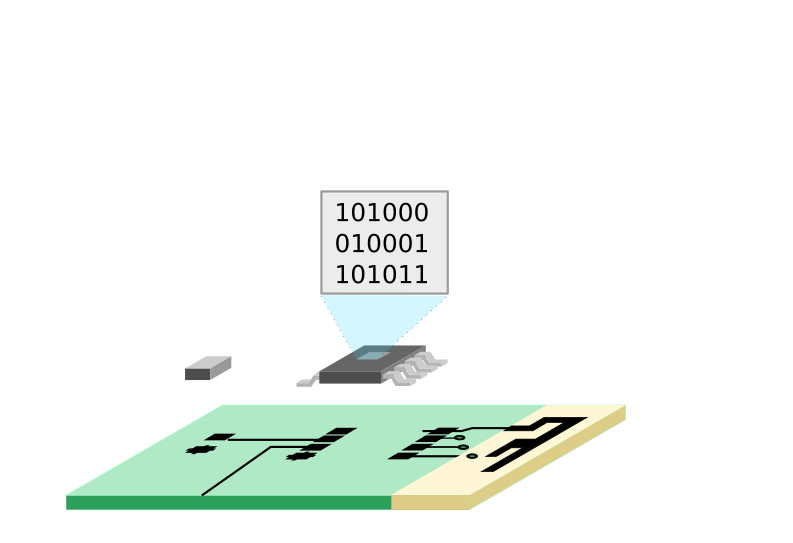Software reverse-engineeering
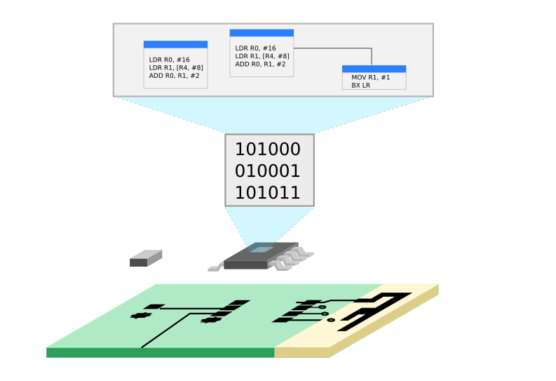Sniffing wired comms.
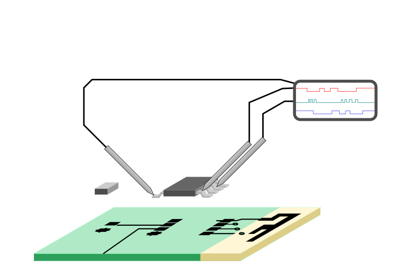Sniffing wireless comms.
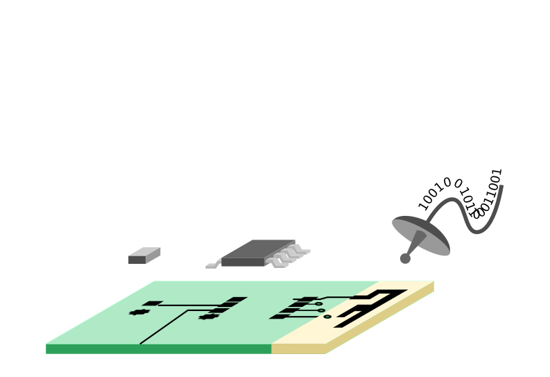Find vulns & attack !
Our victim smartlock
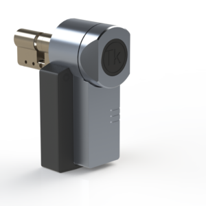
Step #1: teardown
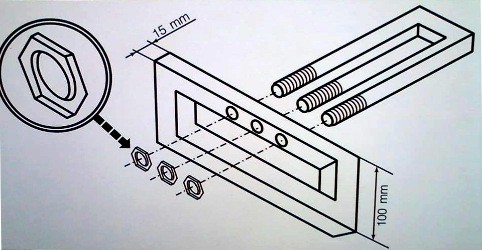
Use the right tools
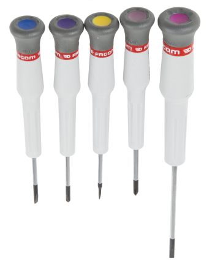 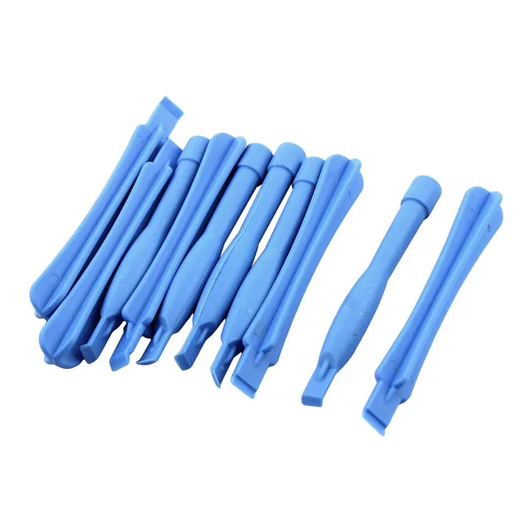

Keep calm !
Step #2: Global Analysis
Electronics engineers are humans too
- Components position based on their global role
- Connectors and components producing heat placed near the edges
Components identification
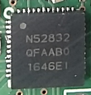
nRF52832
2.4 GHz Bluetooth
Low Energy capable System-on-Chip
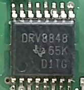
DRV8848
Dual H-Bridge Motor driver
Functions vs. Components
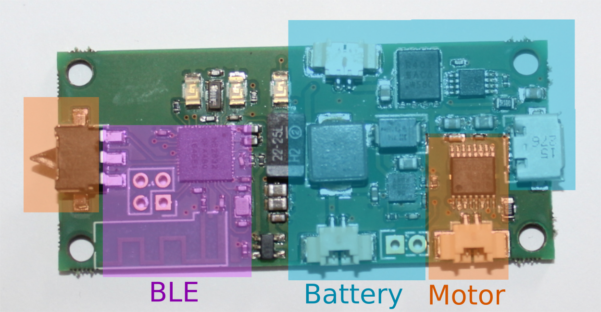
Step #3: recover Schematics
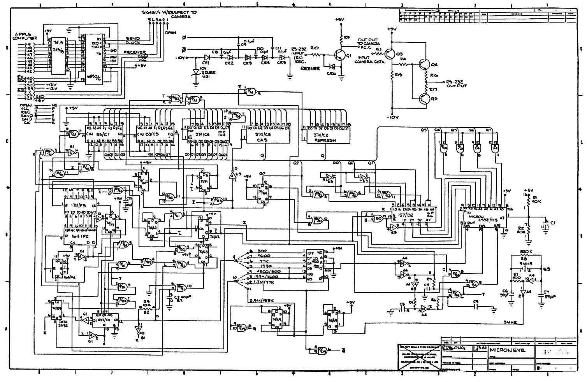
Pictures + software FTW
- Using high-res pictures (or multimeter), follow tracks and vias
- Determine protocols used for Inter-IC communication
- Draw a simplified schematics
Follow tracks and vias
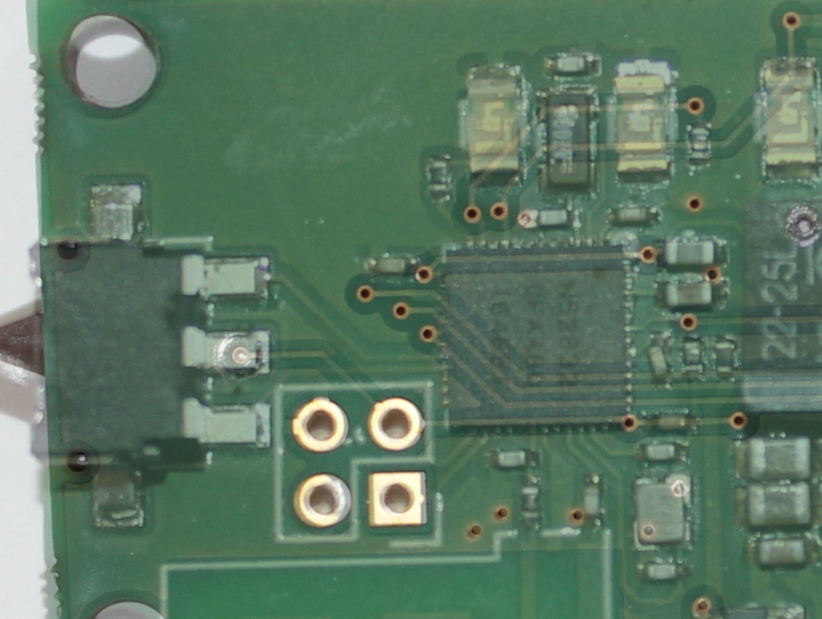
Determine protocols used
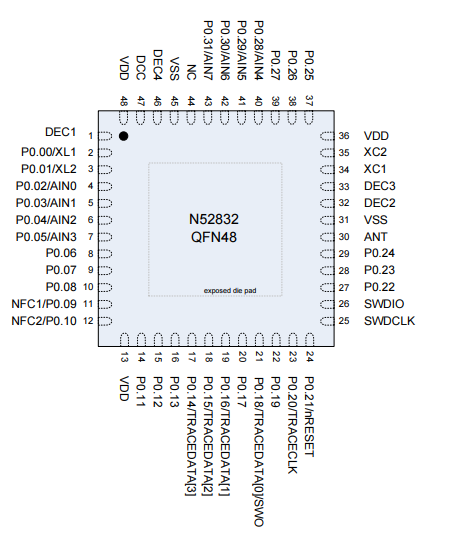
Simplified Schematics
- Use Inkscape, Adobe Illustrator, MS Visio, or whatever
- Draw only the interesting stuff, we do not want to counterfeit

Step #4: get firmware
Use debugging interfaces !
- Offers a proper way to access Flash memory
- Found in > 50% of devices we have tested
- Requires the right adapter to connect to
Dumping firmware with OpenOCD
$ openocd -f interface/stlink-v2.cfg
-f target/nrf5x.cfg -c init -c halt
-c "dump_image /tmp/firmware.bin 0x0 0x80000"When debugging is not enabled, abuse OTA !
Over-The-Air updates
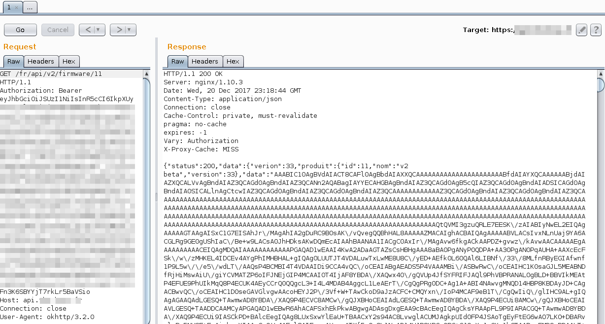Or dump every available
storage device 😎
Firmware dumped !
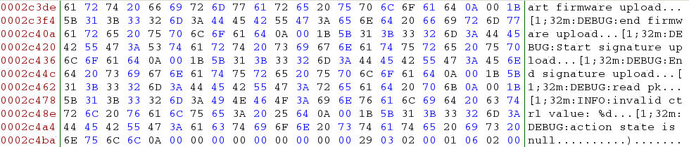
Spare area is EVIL
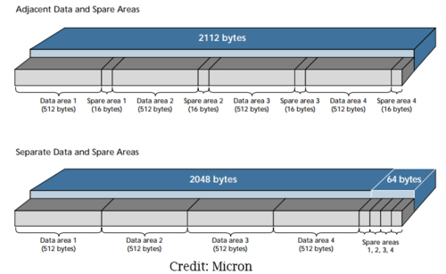
Remove OOB data !
(and use ECC to fix errors)
Step #5: Determine Target architecture
Answer the basic questions
- What architecture is this ?
- Does it run an OS ?
- Does it use a FS ?
What architecture is it ?
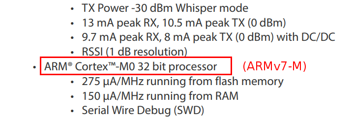
ARM Cortex-M0 (ARMv7-M)
Does it run an OS ?
NOPE.
Does it use a FS ?
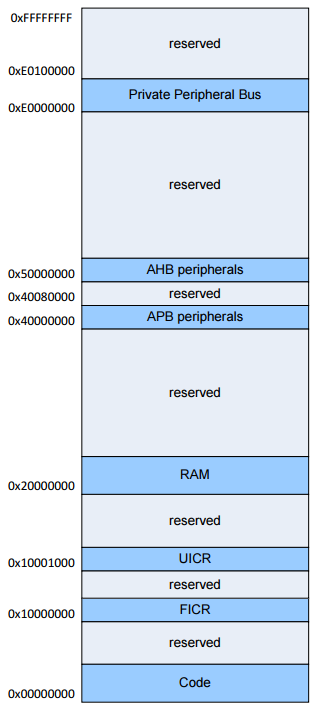
Nope.
NRF51 Softdevice
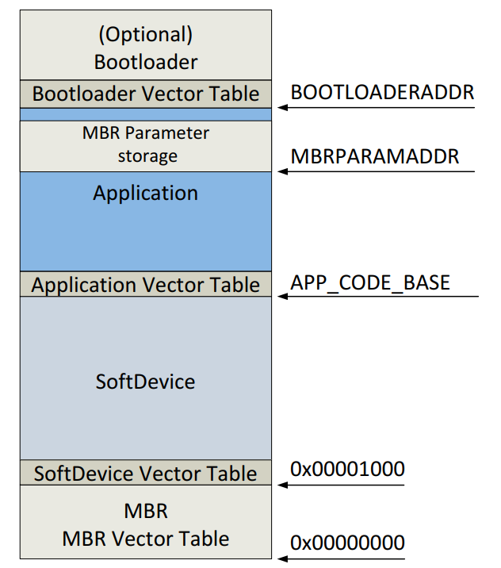
Softdevice version ?
Easy-peasy !
$ strings firmware-original.bin | grep sdk
/home/benoit/workspace/nrf51/firmware/sdk/sdk13.0/components/libraries/timer/app_timer.c
/home/benoit/workspace/nrf51/firmware/sdk/sdk13.0/components/softdevice/common/softdevice_handler/softdevice_handler.c
/home/benoit/workspace/nrf51/firmware/sdk/sdk13.0/components/softdevice/common/softdevice_handler/softdevice_handler_appsh.c
/home/benoit/workspace/nrf51/firmware/sdk/sdk13.0/components/libraries/bootloader/dfu/nrf_dfu_settings.c
/home/benoit/workspace/nrf51/firmware/sdk/sdk13.0/components/libraries/bootloader/dfu/nrf_dfu_utils.c
/home/benoit/workspace/nrf51/firmware/sdk/sdk13.0/components/libraries/timer/app_timer.c
/home/benoit/workspace/nrf51/firmware/sdk/sdk13.0/components/softdevice/common/softdevice_handler/softdevice_handler.cQuick reminder
- It runs an OS or use a known FS:
- You'd better drop binaries in IDA Pro
- It uses no FS and looks like a crappy blob of data:
- You'd better figure out the architecture and memory layout.
Step #6: Disassemble !
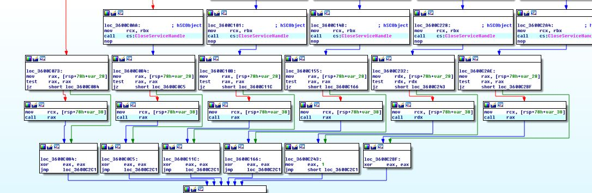
Specify target architecture and layout
- Configure CPU accordingly
- Configure memory layout if required
- Perform a quick sanity check (strings xrefs, ...)
Automated SDK functions detection and renaming
- We developed our own tool to ease SoftDevice-based firmware reverse-engineering
- It helps detecting SoftDevice version and automatically rename SDK exported functions
nRF5x-tools available on Github
https://github.com/DigitalSecurity/nrf5x-tools
Mobile apps too
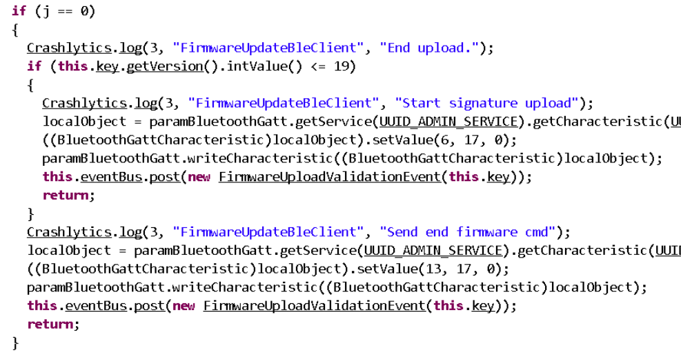
Step #7: sniff all the things
Sniff/intercept communications
- May require various hardware: SPI, I2C, WiFi, BLE, nRF24, Sigfox, LoRa, ...
- PCAP compatible tools are great
- Beware the cost (a lot of $$$) !
Bluetooth Low Energy MITM
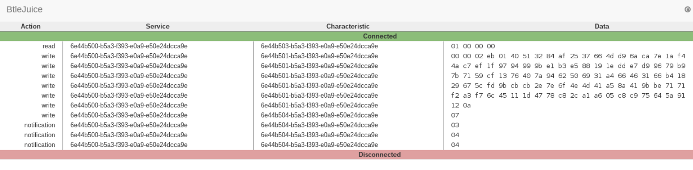
https://github.com/DigitalSecurity/btlejuice
How our smartlock works
(based on a MitM attack)
- App retrieves a Nonce from the lock
- App encrypts a token and send it to the lock
- Lock decrypts token and react accordingly
By the way ...
-
The mobile app authenticates the smartlock only by its exposed service UUID:
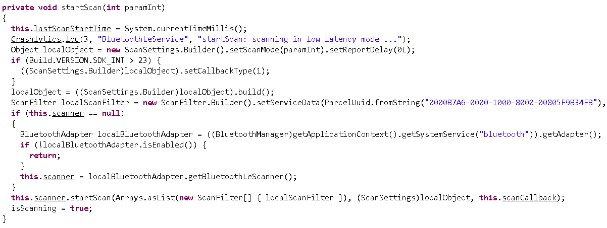
Step #8: find bugs & vulns
Search bugs & vulns
- Default password/key
- Escape shell
- Buffer overflow
- Misconfiguration
- ...
Smartlock Security features
- Relies on a Nonce generated by the smartlock to avoid replay attacks
- True AES-based encryption used, cannot break it
- Resisted to fuzzing, we did not managed to force open the lock
But ...
... is it «Random» ?
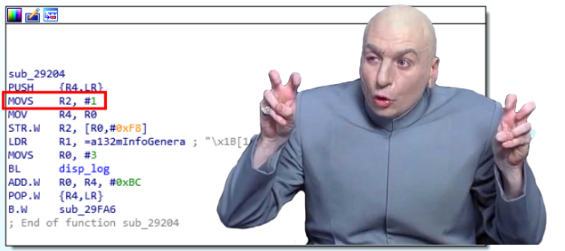
I've already seen that ...

(source: XKCD)
Security issues
- Spoofing: App does not authenticate the smartlock it connects to
- Random Nonce is not random at all !
So what ?
- An attacker may spoof the smartlock to force the App to send an encrypted token
- He/she may be able to replay a valid token as the nonce is always the same
Step #9: Exploit !

Spoof smartlock
- Use NodeJS with Bleno FTW
- Exploit based on our Mockle library
https://github.com/DigitalSecurity/mockle
Spoofing smartlock
$ sudo node capture-token.js
[setup] creating mock for device XXXXXXX (xx:xx:xx:6b:fc:88)
[setup] services registered
[ mock] accepted connection from address: 5e:74:79:1e:5f:a9
> Register callback for service 6e4...ca9e:6e4...ca9e
> Read Random, provide default value 1.
> End of transmission
[i] Token written to `token.json`Replay token
$ sudo node replay-token.js
BTLE interface up and running, starting scanning ...
[i] Target found, replaying token ...
doneBug is now fixed
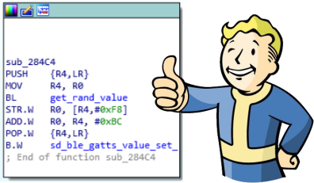
Conclusion
To be improved
- We have been using this methodology intensively since the last two years
- There is space for improvements, obviously
- Vendor fixed (some) of the vulnerabilities we demonstrated
Pro tips
- Take your time and document all the things
- Read datasheets carefully
- Learn how to master Inkscape, it helps a lot
- Start from the bottom (PCB) and go up !
Pro tips (cont'd)
- As usual, know your tools and how to use them
- Share and learn from others (many cool tricks to discover)
Practice !
- Soldering (tiny wires)
- Desoldering with hot air gun
- Use the scope
- Use the scope again
- Code on embedded devices
- ...